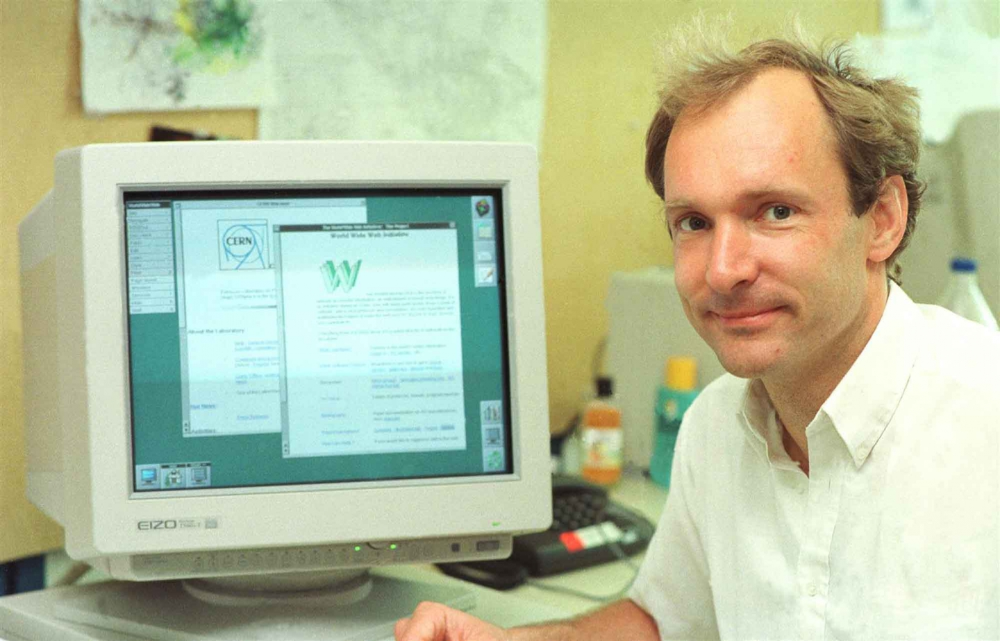

class: center, middle # HTTP by Example ## HTTP/1, HTTP/2 and HTTP/3 Webnesday 2025 Roman Ehrbar ??? - Preparation - Questions to audience: - Who would say he/she masters http in all versions? --- # History  ??? - Who is this? Tim Berners-Lee - He has less hairs, and the ones still there are gray. - Around 1994 with his own browser. --- # History - Idea of Hypertext was born (universal library with interlinked documents since 1960). - Documents usually shipped on floppy disks. - TCP/IP was standardized. - Non standardized hard- and software. ??? - Interesting backstory, but too much for this talk. It's a rabbit hole. --- # History - Development of ... - standard protocol for retrieving documents. - standard format for representing documents. - program to serve documents over the network. - program to view retrieved text documents and graphics. Request: ``` GET /my-page.html ``` Response: ```text <html> An text-only web page </html> ``` ??? - In short: HTTP, HTML and a Browser. - Graphical Browser in NeXTSTEP workstations (objective-c), but were not portable enough. - _Line Mode_ browser. - Typical client-server protocol, request initiated by the recipient. - Designed to be human readable. - Only supported method was `GET` - No headers or status codes. - Did not have a version at the time, was later named `HTTP/0.9`. --- # Basic HTTP Server -- contents of `minimal.http`: ```http HTTP/1.0 200 OK <h1>Hi Webnesday ``` -- serving the file: ```sh while true; do cat minimal.http | nc -l 8000 -q 1; done ``` ??? - Connection is handled by the transport layer, provided here with netcat. - The loop is reqired for repeated connections. - When the HTTP version is omitted, it will not be rendered in firefox, but detected as HTTP/0.9. - This minimal example is not well formed, but most browser will accept this. --- # Basic HTTP Server ??? - Could switch to browser and console for demo. - As you see, rendered perfectly. --- # HTTP/1.0 ```http GET /my-page.html HTTP/1.0 User-Agent: NCSA_Mosaic/2.0 (Windows 3.1) ``` ```http HTTP/1.0 200 OK Date: Tue, 15 Nov 1994 08:12:31 GMT Server: CERN/3.0 libwww/2.17 Content-Type: text/html <HTML> A page with an image <IMG SRC="/my-image.gif"> </HTML> ``` ??? - Example sourced from MDN - Additions: - Version in request and response - Status code line in response - Headers for extension, state management and content information (images). - Describe Anatomy: - Method: GET, HEAD, POST - Path - Headers - Status Code; Status Message - _try-and-see_ approach implemented by servers and browsers, to see which feature got traction. --- # HTTP/1.1 First standardized version of HTTP in 1997. ```http GET /en-US/docs/Glossary/CORS-safelisted_request_header HTTP/1.1 Host: developer.mozilla.org User-Agent: Mozilla/5.0 (Macintosh; Intel Mac OS X 10.9; rv:50.0) Gecko/20100101 Firefox/50.0 Accept: text/html,application/xhtml+xml,application/xml;q=0.9,*/*;q=0.8 Accept-Language: en-US,en;q=0.5 Accept-Encoding: gzip, deflate, br Referer: https://developer.mozilla.org/en-US/docs/Glossary/CORS-safelisted_request_header ``` ```http HTTP/1.1 200 OK Connection: Keep-Alive Content-Encoding: gzip Content-Type: text/html; charset=utf-8 Date: Wed, 20 Jul 2016 10:55:30 GMT Etag: "547fa7e369ef56031dd3bff2ace9fc0832eb251a" Keep-Alive: timeout=5, max=1000 Last-Modified: Tue, 19 Jul 2016 00:59:33 GMT Server: Apache Transfer-Encoding: chunked Vary: Cookie, Accept-Encoding ``` ??? - Connection reuse - Chunked response - Cache control - Content negotiation: language, encoding and type - `Host` header allows to host different domains from the same IP address. - More features have been omitted to keep it short. - Was stable for many years, but finaly split up to allow for the updated versions. --- # HTTP/2 TODO: Add screenshot of debug tools/wireshark. ??? - Binary protocoll, not human readable anymore. - Multiplexing, reuse existing TCP-Connection for multiple ressources. - Compression of headers. - Headers will be reconstructed by the browser developer tools. - Saves budget for data transfer overhead. - Requires upgrade header or prior knowledge. - Only update the server, no significant work for web developers. Disable compression, as HTTP/2 has own context-aware compression. - Standardized in 2015, peaked in 2021 with more than 49%. --- # HTTP/3 ??? - Uses _QUIC_ instead of TCP, running multiple streams over UDP with packet loss detection and retransmission. - Combines the handshake with TLS. Usually no unencrypted connections, which are hard to intercept. - Falls back to HTTP/TCP if UDP is blocked or MTU is too small. - Took the lead over HTTP/2 just this year (April 2025). --- # Summary ??? - Questions to audience: - Who still thinks there was nothing noteworthy in these slides? Challenge to do it better at next webnesday. --- # Resources - https://developer.mozilla.org/en-US/docs/Web/HTTP